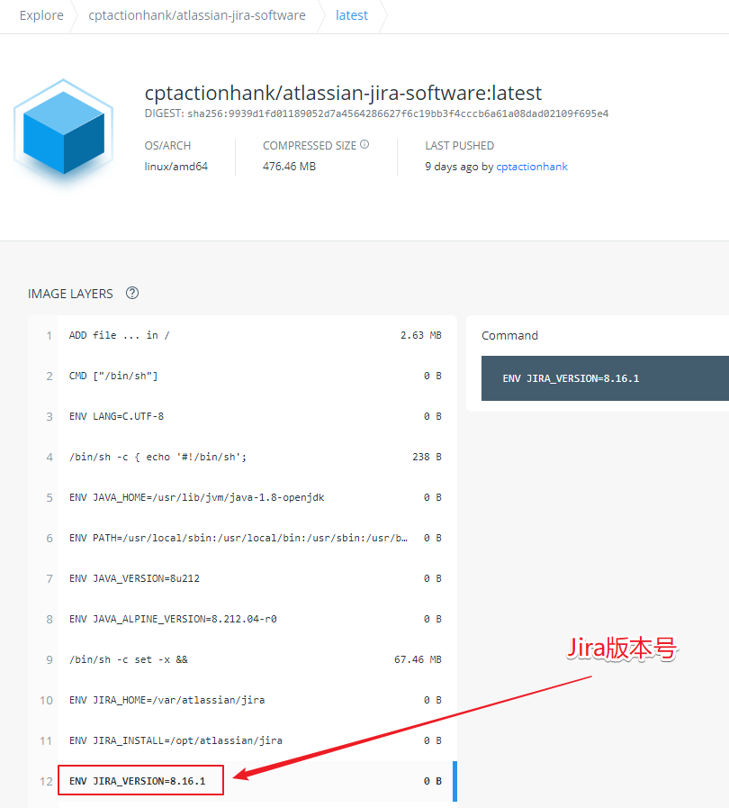

服务
版本号
Confluence
7.9.3
docker pull cptactionhank/atlassian-confluence:latest
Jira
8.16.1
docker pull cptactionhank/atlassian-jira-software:latest
MySQL
5.7.34
docker pull mysql:5.7.34
MySQL 容器部署 1 2 3 4 5 6 7 8 9 10 mkdir -p /opt/atlassian docker run -d -p 13306:3306 --name atlassian_mysql --restart=always \ --ulimit nofile=65536:65536 \ -v /opt/atlassian/mysql/data:/var/lib/mysql \ -e MYSQL_ROOT_PASSWORD=123456 \ -e TZ=Asia/Shanghai \ mysql:5.7.34
需要注意的是，事务隔离策略设为 READ-COMMITTED。
通过 show variables like 'tx%'; 可查询事务隔离策略是否正确设置。
修改 my.cnf 配置
进入容器，查看原 my.cnf 文件内容
1 2 docker exec -it atlassian_mysql /bin/bash
宿主机中创建 my.cnf 文件，将步骤1中原文件内容复制粘贴至 my.cnf，并追加内容
REF:
1 2 3 4 5 6 7 8 9 10 11 12 13 14 15 16 17 18 19 20 21 22 # but WITHOUT ANY WARRANTY; without even the implied warranty of # MERCHANTABILITY or FITNESS FOR A PARTICULAR PURPOSE. See the # GNU General Public License, version 2.0, for more details. # # You should have received a copy of the GNU General Public License # along with this program; if not, write to the Free Software # Foundation, Inc., 51 Franklin St, Fifth Floor, Boston, MA 02110-1301 USA !includedir /etc/mysql/conf.d/ !includedir /etc/mysql/mysql.conf.d/ [mysqld] default-storage-engine=INNODB character_set_server=utf8mb4 collation-server=utf8mb4_bin max_allowed_packet=256M innodb_default_row_format=DYNAMIC innodb_large_prefix=ON innodb_file_format=Barracuda innodb_log_file_size=2G transaction-isolation=READ-COMMITTED binlog_format=row
文件传输至容器内
1 docker cp my.cnf atlassian_mysql:/etc/mysql/
重启mysql
1 docker restart atlassian_mysql && docker logs -f atlassian_mysql
创建表及用户
REF: Connecting Jira applications to a database
通过 Navicat 或 进入mysql，执行以下语句
1 2 3 4 5 6 7 8 9 10 11 12 13 14 15 CREATE DATABASE jira CHARACTER SET utf8mb4 COLLATE utf8mb4_bin;CREATE USER jira IDENTIFIED BY 'jira' ;GRANT ALL PRIVILEGES ON `jira`.* TO 'jira' @'%' IDENTIFIED BY 'jira' WITH GRANT OPTION;GRANT ALL PRIVILEGES ON `jira`.* TO 'jira' @'localhost' IDENTIFIED BY 'jira' WITH GRANT OPTION;FLUSH PRIVILEGES; CREATE DATABASE confluence CHARACTER SET utf8mb4 COLLATE utf8mb4_bin;CREATE USER confluence IDENTIFIED BY 'confluence' ;GRANT ALL PRIVILEGES ON `confluence`.* TO 'confluence' @'%' IDENTIFIED BY 'confluence' WITH GRANT OPTION;GRANT ALL PRIVILEGES ON `confluence`.* TO 'confluence' @'localhost' IDENTIFIED BY 'confluence' WITH GRANT OPTION;FLUSH PRIVILEGES;
Jira 准备 Docker镜像
破解工具
容器部署 Dockerfile
摘自：https://github.com/cptactionhank/docker-atlassian-jira-software/blob/master/Dockerfile
Jira版本查看：https://www.atlassian.com/software/jira/download-archives
1 2 3 4 5 6 7 8 9 10 11 12 FROM cptactionhank/atlassian-jira-software:latestUSER rootRUN apk add -U tzdata && cp /usr/share/zoneinfo/Asia/Shanghai /etc/localtime COPY "atlassian-agent.jar" /opt/atlassian/jira/ RUN echo '\nexport CATALINA_OPTS="-javaagent:/opt/atlassian/jira/atlassian-agent.jar ${CATALINA_OPTS}"' >> /opt/atlassian/jira/bin/setenv.sh
将该 Dockerfile 与 atlassian-agent.jar 放于同一目录下，构建镜像
1 docker build -t atlassian/jira:8.16.1 .
Jira版本号可在dockerhub中查到

运行容器 1 2 3 docker run -d -p 18080:8080 --name atlassian_jira --restart=always \ -v /opt/atlassian/jira/data:/var/atlassian/jira \ atlassian/jira:8.16.1
页面配置
访问http://{ip}:18080，打开Jira页面，选择好语言后，点击第二个选项，进入下一步
填写数据库设置（MySQL相关账号密码、数据库等配置信息详见 MySQL / 创建表及用户 所述），并通过点击 测试连接 验证配置无误后，进入下一步
配置Jira标题、访问URL后，进入下一步
输入许可证信息（许可证关键字生成方式详见 Jira / 破解激活 所述）
破解激活
在 atlassian-agent.jar 文件目录下执行命令，生成许可证
举个栗子：
1 java -jar atlassian-agent.jar -p jira -m aaa@bbb.com -n my_name -o https://zhile.io -s ABCD-1234-EFGH-5678
-p： 第三方插件将其应用密钥/插件关键字作为-p参数。如：-p ‘com.gliffy.integration.confluence’，通过 java -jar atlassian-agent.jar 可看到参数帮助
-m： 邮箱地址
-n： 名称
-o： Jira的访问地址
-s： 服务器ID，形如：AAAA-BBBB-CCCC-DDDD
将生成的许可证复制到Jira页面中，完成破解
破解完成确认
Confluence 准备 Docker镜像
破解工具
容器部署 Dockerfile
摘自：https://github.com/cptactionhank/docker-atlassian-confluence/blob/master/Dockerfile
Confluence版本查看：https://www.atlassian.com/software/confluence/download-archives
1 2 3 4 5 6 7 8 9 10 11 12 13 14 15 16 17 18 19 20 21 22 23 24 25 26 27 28 29 30 31 32 33 34 35 36 37 38 39 40 41 42 43 44 45 46 47 48 49 50 51 52 53 54 55 56 57 58 59 60 61 62 63 FROM openjdk:8 -alpineENV CONF_HOME /var/atlassian/confluenceENV CONF_INSTALL /opt/atlassian/confluenceENV CONF_VERSION 7.9 .3 ENV JAVA_CACERTS $JAVA_HOME/jre/lib/security/cacertsENV CERTIFICATE $CONF_HOME/certificateRUN set -x \ && apk --no-cache add curl xmlstarlet bash ttf-dejavu libc6-compat gcompat \ && mkdir -p "${CONF_HOME} " \ && chmod -R 700 "${CONF_HOME} " \ && chown daemon:daemon "${CONF_HOME} " \ && mkdir -p "${CONF_INSTALL} /conf" \ && curl -Ls "https://www.atlassian.com/software/confluence/downloads/binary/atlassian-confluence-${CONF_VERSION} .tar.gz" | tar -xz --directory "${CONF_INSTALL} " --strip-components=1 --no-same-owner \ && curl -Ls "https://dev.mysql.com/get/Downloads/Connector-J/mysql-connector-java-5.1.44.tar.gz" | tar -xz --directory "${CONF_INSTALL} /confluence/WEB-INF/lib" --strip-components=1 --no-same-owner "mysql-connector-java-5.1.44/mysql-connector-java-5.1.44-bin.jar" \ && chmod -R 700 "${CONF_INSTALL} /conf" \ && chmod -R 700 "${CONF_INSTALL} /temp" \ && chmod -R 700 "${CONF_INSTALL} /logs" \ && chmod -R 700 "${CONF_INSTALL} /work" \ && chown -R daemon:daemon "${CONF_INSTALL} /conf" \ && chown -R daemon:daemon "${CONF_INSTALL} /temp" \ && chown -R daemon:daemon "${CONF_INSTALL} /logs" \ && chown -R daemon:daemon "${CONF_INSTALL} /work" \ && echo -e "\nconfluence.home=$CONF_HOME " >> "${CONF_INSTALL} /confluence/WEB-INF/classes/confluence-init.properties" \ && xmlstarlet ed --inplace \ --delete "Server/@debug" \ --delete "Server/Service/Connector/@debug" \ --delete "Server/Service/Connector/@useURIValidationHack" \ --delete "Server/Service/Connector/@minProcessors" \ --delete "Server/Service/Connector/@maxProcessors" \ --delete "Server/Service/Engine/@debug" \ --delete "Server/Service/Engine/Host/@debug" \ --delete "Server/Service/Engine/Host/Context/@debug" \ "${CONF_INSTALL} /conf/server.xml" \ && touch -d "@0" "${CONF_INSTALL} /conf/server.xml" \ && chown daemon:daemon "${JAVA_CACERTS} " USER daemon:daemonEXPOSE 8090 8091 VOLUME ["/var/atlassian/confluence" , "/opt/atlassian/confluence/logs" ] WORKDIR /var/atlassian/confluence COPY docker-entrypoint.sh / ENTRYPOINT ["/docker-entrypoint.sh" ] CMD ["/opt/atlassian/confluence/bin/start-confluence.sh" , "-fg" ]
docker-entrypoint.sh
摘自：https://github.com/cptactionhank/docker-atlassian-confluence/blob/master/docker-entrypoint.sh
1 2 3 4 5 6 7 8 9 10 11 12 13 14 15 16 17 18 19 20 21 22 23 24 25 26 27 28 29 #!/bin/bash if [ "$(stat -c "%Y" "${CONF_INSTALL} /conf/server.xml" ) " -eq "0" ]; then if [ -n "${X_PROXY_NAME} " ]; then xmlstarlet ed --inplace --pf --ps --insert '//Connector[@port="8090"]' --type "attr" --name "proxyName" --value "${X_PROXY_NAME} " "${CONF_INSTALL} /conf/server.xml" fi if [ -n "${X_PROXY_PORT} " ]; then xmlstarlet ed --inplace --pf --ps --insert '//Connector[@port="8090"]' --type "attr" --name "proxyPort" --value "${X_PROXY_PORT} " "${CONF_INSTALL} /conf/server.xml" fi if [ -n "${X_PROXY_SCHEME} " ]; then xmlstarlet ed --inplace --pf --ps --insert '//Connector[@port="8090"]' --type "attr" --name "scheme" --value "${X_PROXY_SCHEME} " "${CONF_INSTALL} /conf/server.xml" fi if [ -n "${X_PROXY_SECURE} " ]; then xmlstarlet ed --inplace --pf --ps --insert '//Connector[@port="8090"]' --type "attr" --name "secure" --value "${X_PROXY_SECURE} " "${CONF_INSTALL} /conf/server.xml" fi if [ -n "${X_PATH} " ]; then xmlstarlet ed --inplace --pf --ps --update '//Context[@docBase="../confluence"]/@path' --value "${X_PATH} " "${CONF_INSTALL} /conf/server.xml" fi fi if [ -f "${CERTIFICATE} " ]; then keytool -noprompt -storepass changeit -keystore ${JAVA_CACERTS} -import -file ${CERTIFICATE} -alias CompanyCA fi exec "$@ "
Dockerfile.with-agent 1 2 3 4 5 6 7 8 9 10 11 12 13 14 FROM cptactionhank/atlassian-confluence:latestUSER rootRUN apk add -U tzdata \ && cp /usr/share/zoneinfo/Asia/Shanghai /etc/localtime \ && chmod +x /docker-entrypoint.sh COPY "atlassian-agent.jar" /opt/atlassian/confluence/ RUN echo '\nexport CATALINA_OPTS="-javaagent:/opt/atlassian/confluence/atlassian-agent.jar ${CATALINA_OPTS}"' >> /opt/atlassian/confluence/bin/setenv.sh
将该 Dockerfile.with-agent 与 atlassian-agent.jar 放于同一目录下，构建镜像
1 docker build -f Dockerfile.with-agent -t atlassian/confluence:7.9.3 .
Confluence版本号可在dockerhub中查到
运行容器 1 2 3 docker run -d -p 18090:8090 --name atlassian_confluence --restart=always \ -v /opt/atlassian/conf/data:/var/atlassian/confluence \ atlassian/confluence:7.9.3
页面配置 参考 Jira-页面配置
破解激活 参考 Jira-破解激活
插件Tips PlantUML for Confluence
使用该插件，需在容器内执行如下命令，以安装 GraphViz
1 2 3 4 5 6 7 8 9 10 11 12 13 14 15 16 17 18 19 20 21 22 23 24 25 bash-4.4 fetch http://dl-cdn.alpinelinux.org/alpine/v3.9/main/x86_64/APKINDEX.tar.gz fetch http://dl-cdn.alpinelinux.org/alpine/v3.9/community/x86_64/APKINDEX.tar.gz v3.9.6-143-ga5f34edab6 [http://dl-cdn.alpinelinux.org/alpine/v3.9/main] v3.9.6-138-ge069a77b3b [http://dl-cdn.alpinelinux.org/alpine/v3.9/community] OK: 9791 distinct packages available bash-4.4 (1/14) Installing pixman (0.34.0-r6) (2/14) Installing cairo (1.16.0-r1) (3/14) Installing libintl (0.19.8.1-r4) (4/14) Installing libblkid (2.33-r0) (5/14) Installing libmount (2.33-r0) (6/14) Installing pcre (8.42-r2) (7/14) Installing glib (2.58.1-r3) (8/14) Installing libltdl (2.4.6-r5) (9/14) Installing libxft (2.3.2-r3) (10/14) Installing fribidi (1.0.5-r1) (11/14) Installing graphite2 (1.3.12-r1) (12/14) Installing harfbuzz (2.2.0-r0) (13/14) Installing pango (1.42.4-r1) (14/14) Installing graphviz (2.40.1-r1) Executing busybox-1.29.3-r10.trigger Executing glib-2.58.1-r3.trigger Executing graphviz-2.40.1-r1.trigger OK: 155 MiB in 93 packages
CentOS7 安装 CentOS7安装XMLStarlet工具 1 2 3 wget http://dl.fedoraproject.org/pub/epel/7/x86_64/Packages/x/xmlstarlet-1.6.1-1.el7.x86_64.rpm yum install libxslt rpm -ivh xmlstarlet-1.6.1-1.el7.x86_64.rpm
安装包下载 1 wget 'https://product-downloads.atlassian.com/software/confluence/downloads/atlassian-confluence-7.13.2-x64.bin'